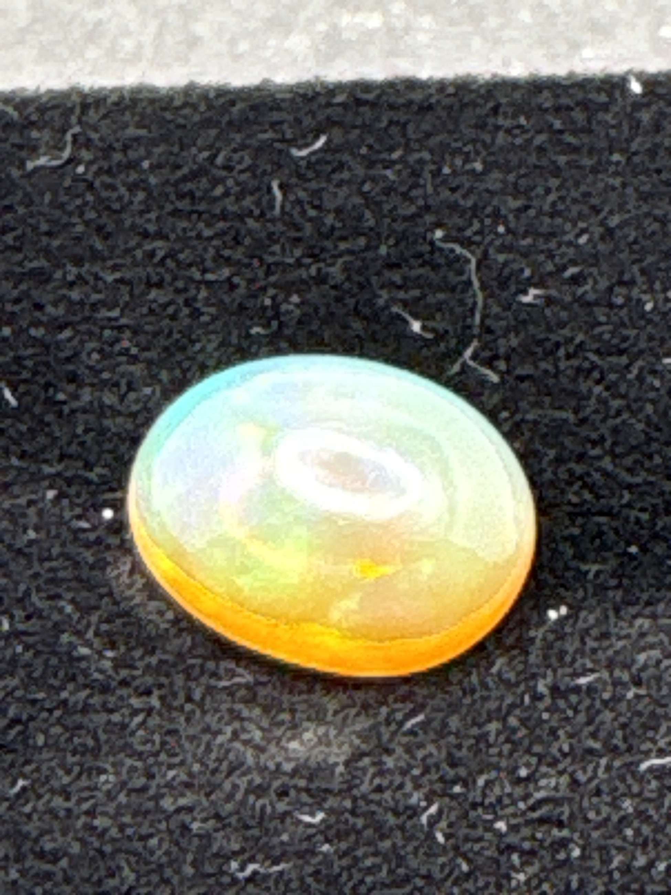

The Gem Drawer › No. 25

A white-cream cabochon with strong green, orange and blue play-of-color.
| Catalogue no. | #25 |
|---|---|
| As labeled | Ethiopian Opal (label plural "OPALS/OVALS" but only 1 stone visible in photos - see notes) |
| Shape / cut | Oval cabochon |
| Weight | Not recorded |
| Measurements | 8 x 10 |
| Colour | White/cream body with green, orange, and blue play-of-color |
| Clarity / condition | Not recorded |
Interested in this stone, or in the collection as a whole? Terry VanWormer can answer questions about it.
Click here to inquireor email Terry directly at maxrebo34@gmail.com